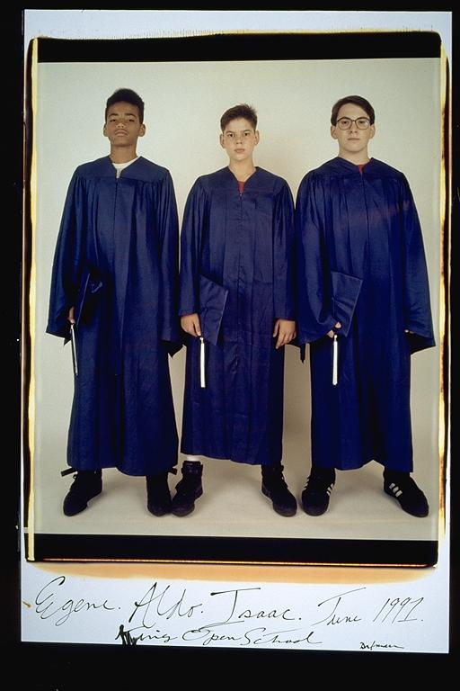

Aldo: The three of us didn't go to high school together. So, after eighth grade we all drifted apart a bit. I remember making new friends at my high school, as they did at their high school. But we met each other's new friends, and eventually hung out just as much as we had before we had split for high school.
Eugene: "Eighth Grade Graduation" -- This is not the actual day of graduation because we are wearing sneakers. Wow, we all looked so young. Isaac had longer hair, and so did I. And Isaac is taller then Aldo, and me and Isaac are like the same height, ha, ha, ha! MAN, Isaac had some big feet. And of particular interest, Aldo made me beg for change to to pay for those black Reeboks.
Isaac: I still had an inch or two on Aldo. That wouldn't last. Man, I was so scared at this point in my life. We were off to high school, and I wasn't looking forward to being a freshman at a huge public school. I was so scared that I went with Eugene to this small (140 kids) private school. One of my all-time biggest mistakes. Lesson learned: don't ever make important decisions based on fear. Also, there is definitely such a thing as glasses being too big.
